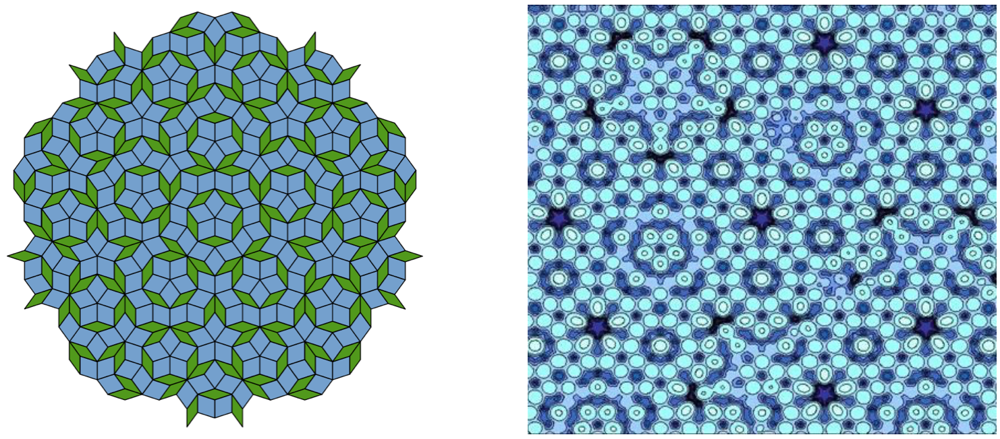

Introduzione al caos
Questa non vuole essere una esauriente e rigorosa trattazione
scientifica della teoria del caos, ma piuttosto vuole trarre spunto
da alcuni esempi concreti...
Vai all'articolo: introduzione al caos
Esempi caotici reali

Sono tanti gli esempi di caos presenti nel mondo reale: il
tempo meteorologico, la formazione delle nuvole, la fibrillazione del
cuore umano...
Vai all'articolo: esempi caotici reali
Ordine nel caos

I sistemi caotici non sono casuali, anche se possono apparire tali...
Vai all'articolo: ordine nel caos
I frattali
La
parola fractal (in italiano frattale) è stata coniata nel
1979 da Benoit Mandelbrot, un matematico dell'IBM...
Vai all'articolo: i frattali